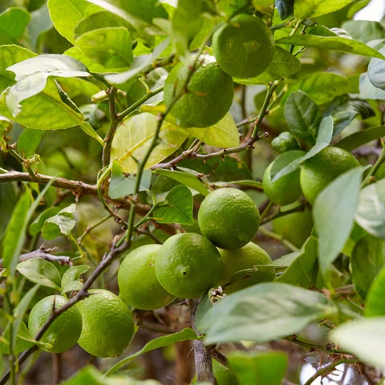

Basonym of Drug
Madanphala
Main Synonym
- Madana
- Chardana
- Pindi
- Nata
- Pinditaka
- Karahato
- Shalyaka
- Vishapushpaka
- Mainaphala
Regional Name
- Bengali: mayna kantara gach, mainaphala
- Gujarati: mindhol, mindhal
- Hindi: mayanphala, mainaphala
- Marathi: gela, gelaphala
- Tamil: marakalana, pungare
- Telugu: vasant kadimi chettu, mangachettu
- English: emetic nut
Botanical Name
Randia dumetorum Lam
Family
Rubiaceae
Classification (Gana)
- Aacharya Charak: anuvasanopaga, asthapanopaga mahakashaya and phalini dravya, vamanakalpa
- Aacharya Sushruta: aaragvadhadi, mushkakadi, urdhvabhagahara gana
- Aacharya Vagbhata: aragvadhadi gana
External Morphology
A large shrub or small tree
Useful Parts
Fruit/ seeds
Important Phytoconstituent
Randia acid, ursosaponin, randianin, arachidic acid, linoceric acid, linoleic acid, palmitic acid
Rasa Panchak
- Rasa: madhur, tikta
- Guna: Laghu, ruksha
- Virya: ushna
- Vipaka: katu
Action
Vatakaphahara
Therapeutic Indication
- Lekhaniya (scrapping the excessive fat and kapha humour)
- Chardana (induce vomiting)
- Vishahara (anti-poisonous)
- Kusthaghna (treat skin diseases)
- Vidradhihara (treat abscesses)
- Sothahara (anti-inflammatory)
Therapeutic Uses
- Dantodbheda - Madanphala fruit pulp is rubbed on gum and teeth while teething problems occur in children.
- Sarpavisha - Root with ox urine is applied as a collyrium in the eyes.
- Kasa - Yastimadhu, Madanphala powder, and Arka root powder are given with honey in excessive coughing.
Dose
For emesis: 3-6 gm, Therapeutic: 1-3 gm
Formulations
- Madanphaladi Churna
- Madanphaladi Varti
Adverse Effect
Not Known